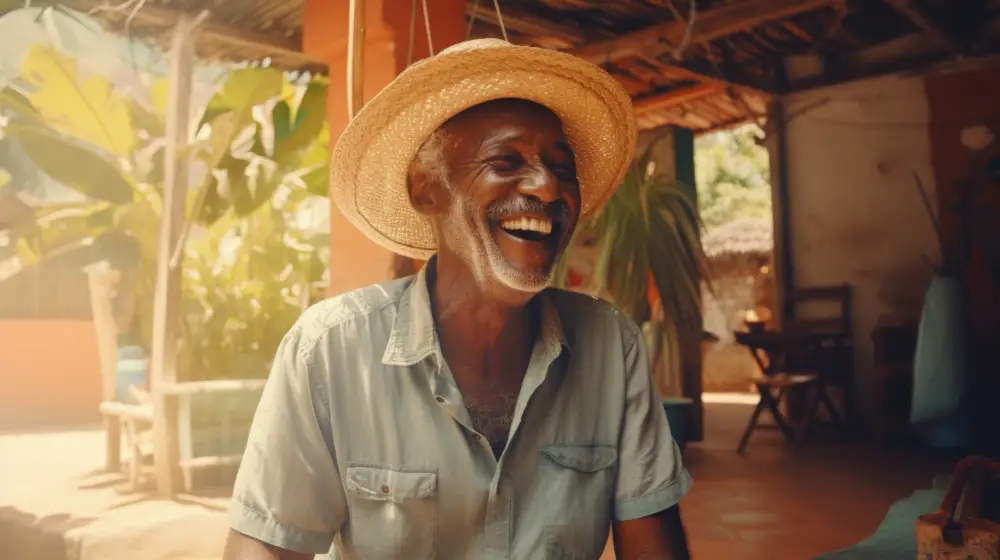
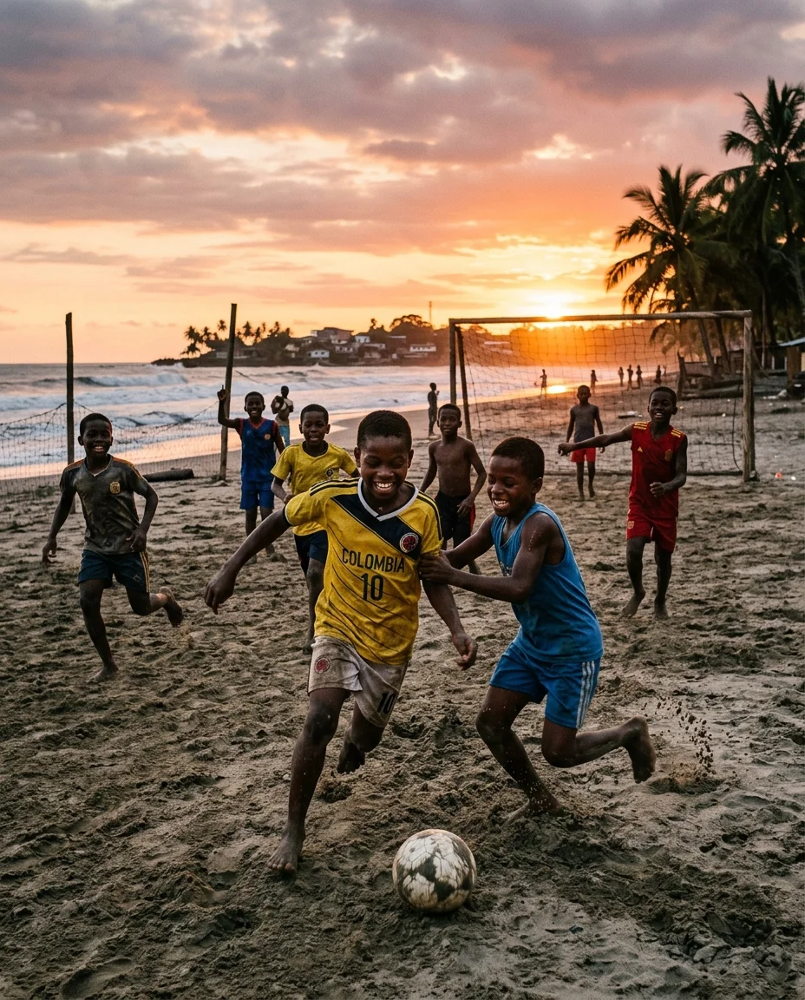
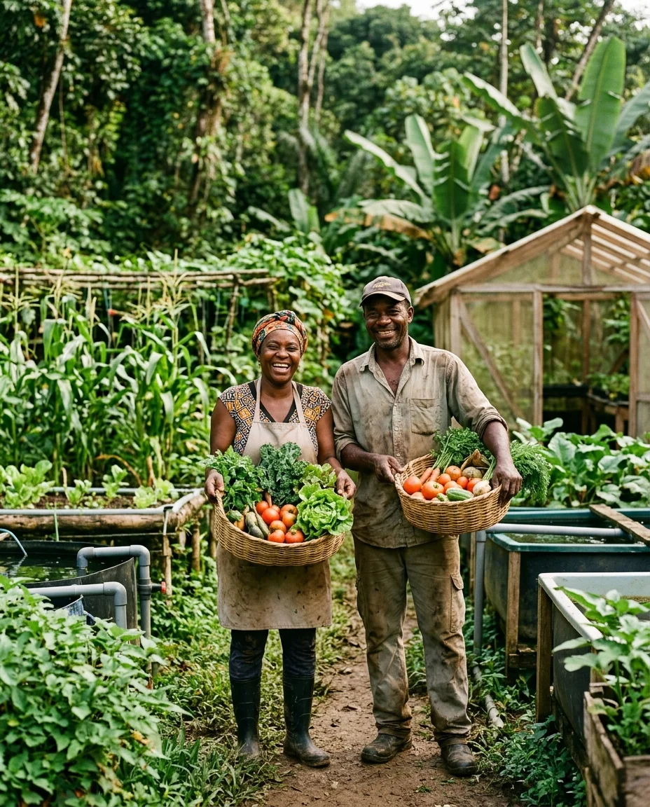

BIODIVERSIDAD & COP16
Guardianes del 70% de la biodiversidad marina
20 millones de hectáreas marinas no se cuidan desde escritorios: se defienden en faenas de pesca artesanal y guardianía viva de manglares.
Fortaleciendo la región desde la región.
Conectamos territorio, acción colectiva y oportunidades.

Territorio, acción colectiva y oportunidades, tejidos a lo largo del Pacífico colombiano.
Cinco ejes de acción, cuatro departamentos, más de veinte municipios. Un mismo propósito.
Conectamos la fuerza comunitaria del litoral con empresas y cooperación global para ejecutar proyectos de alto valor y retorno social medible, sin intermediarios.
Cinco áreas estratégicas estructuran nuestro impacto en más de 20 municipios: método riguroso, liderazgo comunitario y resultados medibles.
Justicia climática y protección de territorios bioculturales.
“Participación en la COP16 de Biodiversidad y apoyo al documento 8J.”
COP16 BIODIVERSIDAD · VALLE DEL CAUCA & PACÍFICOEscucha, prevención y cuidado comunitario con enfoque territorial.
“Cuidar la mente también es construir territorio.”
REDES DE CUIDADO COLECTIVO · ENFOQUE TERRITORIALEncuentro, disciplina y convivencia para juventudes y comunidades.
“El movimiento crea vínculos y multiplica oportunidades.”
CONVIVENCIA & JUVENTUDES · PACÍFICO COLOMBIANO

Asociatividad, ingresos dignos y circuitos económicos locales.
“50 familias proyectadas en iniciativas de acuaponía y lombricultura.”
SOBERANÍA ALIMENTARIA & ASOCIATIVIDAD PRODUCTIVAComunicación propia para que el Pacífico narre su realidad.
“Contar la región desde la región también es transformarla.”
PERIODISMO COMUNITARIO & NARRATIVAS DE PAZCanal oficial para alianzas institucionales, cofinanciación de proyectos e inversión social directa en el Pacífico colombiano.
Plataforma sociocultural creada por Franklin S. Corrales Delgado.
Constitución jurídica para ampliar alianzas y capacidades.
Presencia en cuatro departamentos y más de 20 municipios.
Registros del trabajo de campo en los cuatro departamentos donde estamos.
Selección de muestra del archivo fotográfico institucional.
Aquí nadie llegó a explicarnos la región. Nos preguntaron qué sabíamos y desde ahí construimos.
El manglar no es paisaje. Es despensa, farmacia y memoria. Defenderlo es defendernos.
Aprendimos a sostener la cámara nosotros. Ahora la historia que sale de aquí es la que elegimos contar.
Testimonios recolectados con consentimiento en territorio.
Historias reales desde el territorio: investigación rigurosa, saberes ancestrales e impacto comunitario tangible.
20 millones de hectáreas marinas no se cuidan desde escritorios: se defienden en faenas de pesca artesanal y guardianía viva de manglares.
Frente al asistencialismo: módulos acuapónicos y huertas que generan ingresos estables y soberanía comunitaria.
Cámaras y micrófonos en manos del territorio: transformamos estigmas en dignidad, arte y proyectos de impacto global.
Únete al equipo en territorio: aporta tu talento profesional, pedagógico o comunitario en nuestros 5 ejes de acción.
Canal directo y transparente para financiar equipamiento, programas comunitarios y sostenibilidad en el litoral.
Corporación Soy Pacífico · Personería Jurídica · NIT: 900.584.219-4 · Vigilada Gobernación del Valle del Cauca
En cumplimiento de la Ley Estatutaria 1581 de 2012, su Decreto Reglamentario 1377 de 2013 y demás normas que la modifiquen o complementen, la Corporación Soy Pacífico, identificada con NIT 900.584.219-4, con domicilio principal en Buenaventura, Valle del Cauca, actúa como responsable del tratamiento de los datos personales recolectados a través de esta plataforma digital y sus canales comunitarios de atención.
Los datos personales que suministras voluntariamente al interactuar con la Corporación (vía formularios de onboarding, WhatsApp o correo) se recolectan con las siguientes finalidades legítimas:
Como titular de tus datos personales, la ley colombiana te otorga el derecho inalienable a:
En consonancia con el Código de la Infancia y la Adolescencia (Ley 1098 de 2006) y la jurisprudencia de la Corte Constitucional, las actividades deportivas y culturales con menores de edad cuentan con el consentimiento expreso de sus padres o representantes legales, velando en todo momento por su dignidad e interés superior.
Para consultar, rectificar o solicitar la eliminación de tus datos, puedes dirigir una comunicación formal a nuestro Oficial de Protección de Datos al correo: datos@soypacifico.org o radicar solicitud escrita en nuestra sede en Buenaventura. Tiempo de respuesta máximo: 10 a 15 días hábiles conforme a ley.
Este sitio web opera bajo protocolos de comunicación cifrada SSL/TLS (HTTPS de 256 bits), garantizando que los datos transferidos entre tu navegador y nuestros servidores no puedan ser interceptados ni manipulados por terceros no autorizados.
Priorizamos la privacidad del usuario: este portal no implementa rastreadores invasivos de publicidad comportamental. Únicamente utilizamos almacenamiento local técnico esencial (LocalStorage) para:
Nuestra web contiene enlaces a plataformas externas como WhatsApp (Meta), Instagram, YouTube y LinkedIn para facilitar la interacción comunitaria. Te sugerimos revisar las políticas de privacidad de cada una de estas redes al abandonar nuestro dominio.
La Corporación Soy Pacífico es una entidad sin ánimo de lucro (ESAL), constituida en 2011 con personería jurídica vigente, inscrita ante la Cámara de Comercio de Buenaventura y bajo la inspección, vigilancia y control de la Gobernación del Valle del Cauca.
En cumplimiento del Artículo 364-5 del Estatuto Tributario de la República de Colombia, la Corporación cumple anualmente con el proceso de calificación y permanencia en el Régimen Tributario Especial del impuesto sobre la renta ante la Dirección de Impuestos y Aduanas Nacionales (DIAN).
Creemos firmemente en el diálogo transparente con el territorio. Nuestros informes de gestión, balances financieros certificados y memorias anuales de proyectos están a disposición de los consejos comunitarios, organismos de cooperación y ciudadanía interesada previa solicitud a transparencia@soypacifico.org.
Los contenidos editoriales de Pacific News, fotografías, videos, marcas y material pedagógico de este portal son propiedad de la Corporación Soy Pacífico o se publican con la autorización expresa de las comunidades participantes. Se autoriza su reproducción con fines estrictamente educativos o de divulgación cultural de paz, citando siempre la fuente de origen.
Para prevenir fraudes o suplantaciones, la Corporación informa que no solicita consignaciones en cuentas bancarias de personas naturales ni a través de intermediarios no autorizados. Todas las vinculaciones financieras y acuerdos de cooperación se formalizan mediante canales bancarios corporativos institucionales a nombre exclusivo de Corporación Soy Pacífico (NIT: 900.584.219-4).
Cualquier uso de este portal o articulación con nuestros programas implica el compromiso ético de respetar la autonomía territorial, la diversidad étnica y los saberes ancestrales de las comunidades afrocolombianas e indígenas del litoral Pacífico.
“El diálogo intersectorial y el autorreconocimiento son el corazón de cada acción: aquí la escucha comunitaria se convierte en fuerza transformadora.”
Soy Pacífico nace en 2011 como una plataforma sociocultural que ejercía acciones de fortalecimiento e identidad colectiva de región, reconociendo a través de la conversa y el diálogo intersectorial la importancia y el autorreconocimiento de todo aquello que conforma el Pacífico: sus sectores productivos, sus expresiones culturales, su biodiversidad y su pluriétnia.
Hoy trabajamos en proyectos culturales, comunitarios, ambientales y comunicacionales, fortaleciendo el liderazgo social y la participación ciudadana, y promoviendo procesos de transformación social en Buenaventura y el Valle del Cauca.
Justicia climática y protección de territorios bioculturales.
Tu mensaje estructurado ha sido transferido a WhatsApp para conectar con la Corporación Soy Pacífico.